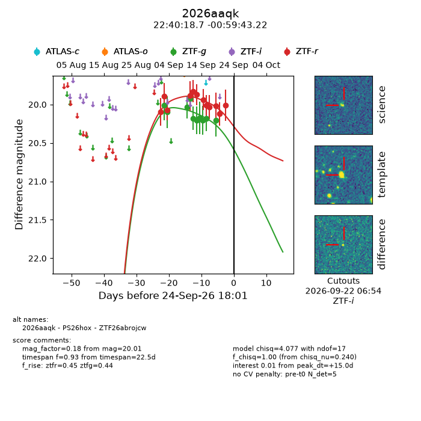
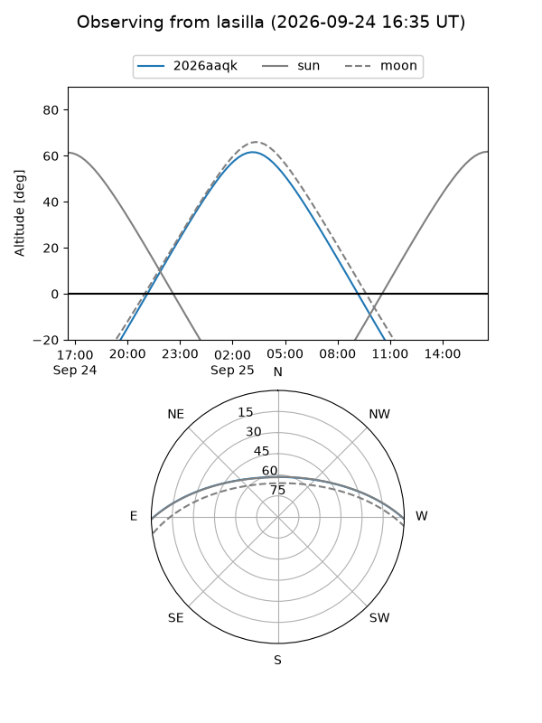
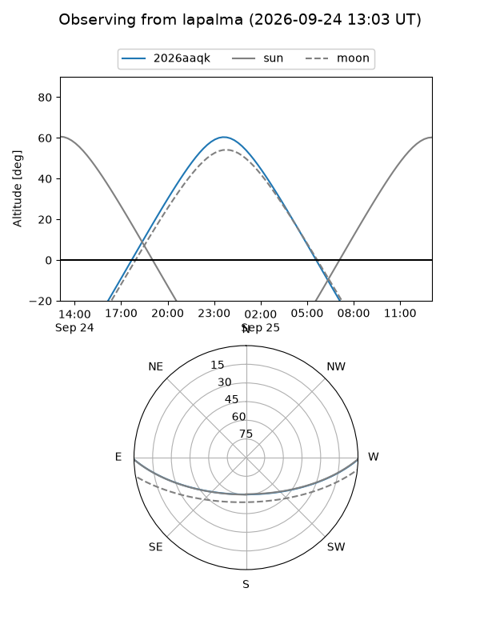
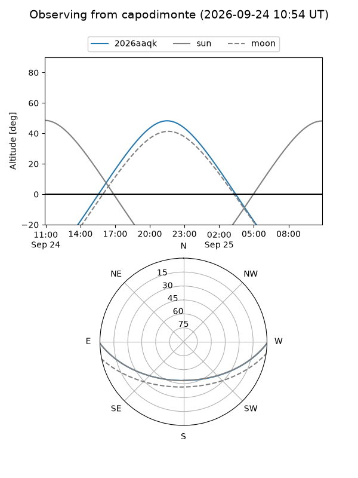
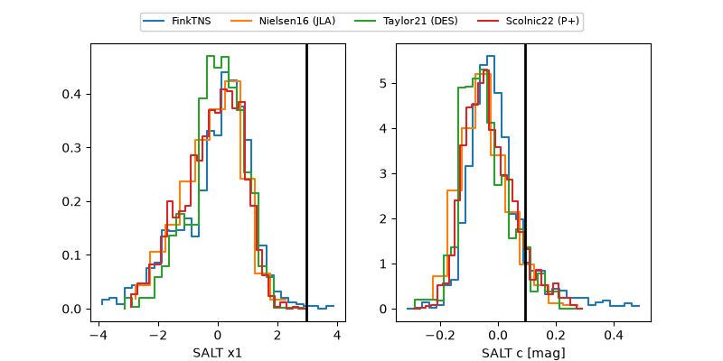

2026aaqk
Target 2026aaqk at 2026-09-24 18:08
Aliases and brokers:
FINK-ZTF: ztf.fink-portal.org/ZTF26abrojcw
Lasair-ZTF: lasair-ztf.lsst.ac.uk/objects/ZTF26abrojcw
ALeRCE-ZTF: alerce.online/object/ZTF26abrojcw
YSE-PZ: ziggy.ucolick.org/yse/transient_detail/2026aaqk
TNS name: wis-tns.org/object/2026aaqk
Direct TNS query: direct search
alt names
ZTF26abrojcw (ztf,fink_ztf)
2026aaqk (tns,yse)
PS26hox (panstarrs)
Coordinates:
equatorial (ra, dec) = 340.0779,-0.99534
equatorial (HMS+DMS) = 22:40:18.70,-00:59:43.22
galactic (l, b) = (67.1276,-49.11783)
Flags:
TNS type: nan
peak dt: +15.0
Photometry:
last ztfg=20.21, ztfr=20.01
10 ztfg, 12 ztfr detections
Lightcurve

Visibility



Additional plots
